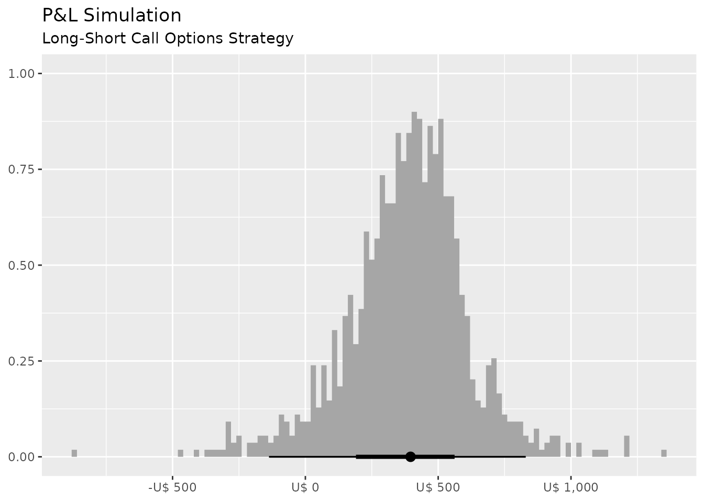
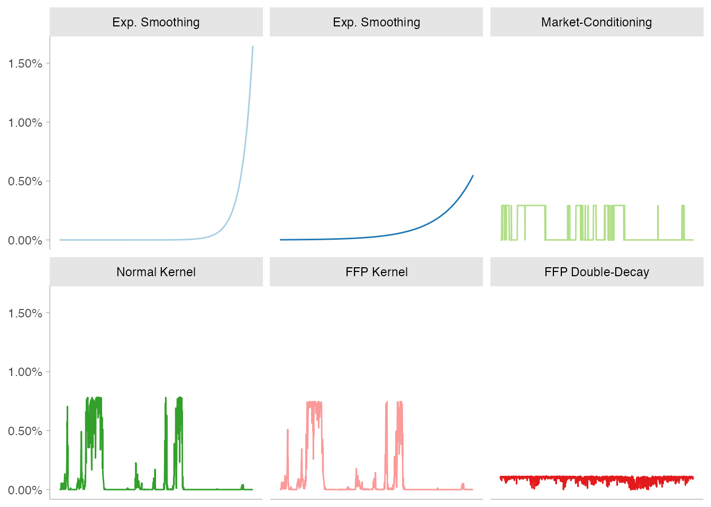
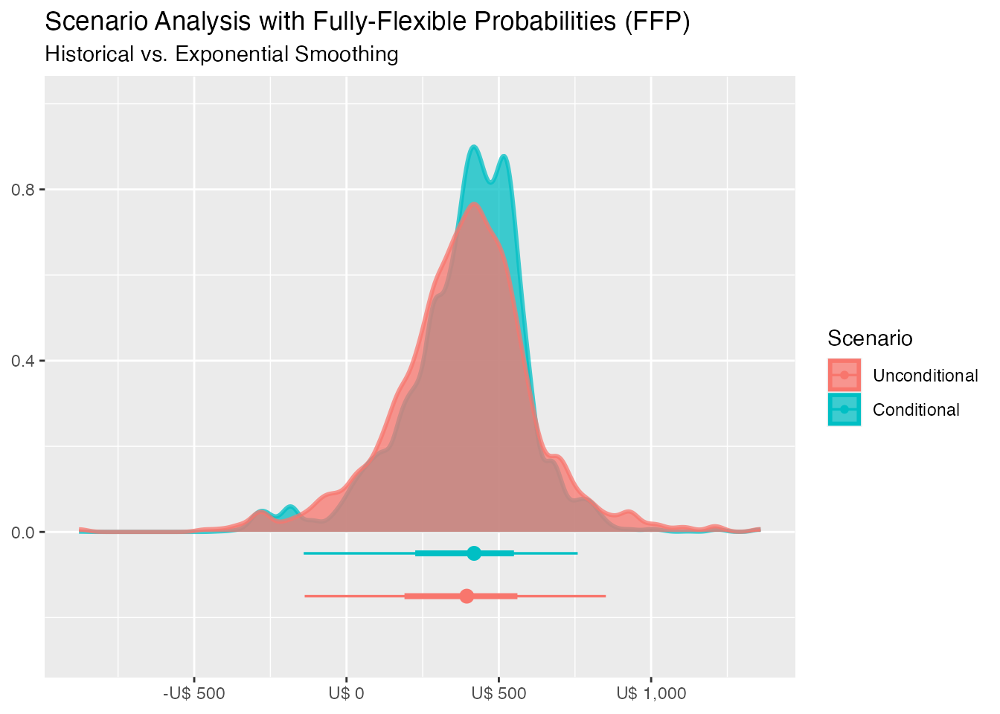

vignettes/Replicating-Meucci-Paper.Rmd
Replicating-Meucci-Paper.RmdConsider, as in Historical Scenarios with Fully Flexible Probabilities, that we would like to price and stress-test a book of long-short call options, in which the underlying is the S&P500 index. The db_tbl dataset contains information on the interest-rates, US stock market and implied volatility. It also provides \(6\) macroeconomic variables that can be used to filter the state of the economy.
# Load Packages
library("dplyr") # Data Manipulation and pipe (%>%)
library("ffp") # Fully-Flexible Probabilities
# Load Data
data("db_tbl")
db_tbl
#> # A tibble: 1,083 × 9
#> SWAP2YR SWAP10YR `CDXIG OTR` `S&P 500` `Dollar Index` Crude Gold VIX
#> <dbl> <dbl> <dbl> <dbl> <dbl> <dbl> <dbl> <dbl>
#> 1 4.13 4.48 52.4 1218. 86.3 67.6 445. 13.6
#> 2 4.18 4.52 52.6 1233. 86.6 66.0 446. 12.9
#> 3 4.24 4.58 50.8 1236. 87.0 64.4 446 12.5
#> 4 4.26 4.58 51.1 1232. 87.0 64.5 448. 12.9
#> 5 4.25 4.55 50.5 1241. 86.9 64.1 450 12.0
#> 6 4.29 4.60 49.8 1241. 87.7 63.3 451. 11.6
#> 7 4.24 4.56 49.7 1231. 87.8 63.1 447 12.4
#> 8 4.25 4.59 49.5 1227. 87.7 65.1 451. 12.9
#> 9 4.28 4.64 49.3 1228. 88.1 64.8 456. 12.5
#> 10 4.37 4.72 50 1238. 88.1 63 460. 11.2
#> # … with 1,073 more rows, and 1 more variable: `10YR Inflation Swap Rate` <dbl>The variables VIX, SWAP10YR and S&P 500 are essential inputs in the Black-Scholes formula and offer an interesting starting point for scenario generation. By making them “stationary” and feeding the output into the last available observation, we get a distribution that “mimmics” historical randomness.
# Inputs in Black-Scholes option pricing
invariants <- db_tbl %>%
dplyr::select(VIX, SWAP10YR, `S&P 500`) %>%
purrr::map_df(~diff(log(.))) # compute the continuous return for every column
# get last observations
last_obs <- db_tbl %>%
dplyr::slice_tail(n = 1) %>%
dplyr::select(VIX, SWAP10YR, `S&P 500`)
# Last observation for the underlying (SP500)
S_0 <- last_obs[["S&P 500"]]
# Last observation for the implied-volatility
vol_0 <- last_obs[["VIX"]]
# Last observation for the risk-free rate
rf_0 <- last_obs[["SWAP10YR"]]
# Gererate Paths from Historical Scenarios
paths <- purrr::map2_df(.x = last_obs, .y = invariants, .f = ~ .x * exp(.y)) %>%
dplyr::rename(S_T = `S&P 500`, vol_T = `VIX`, rf_T = `SWAP10YR`) %>%
tibble::rowid_to_column(var = "id")
paths
#> # A tibble: 1,082 × 4
#> id vol_T rf_T S_T
#> <int> <dbl> <dbl> <dbl>
#> 1 1 16.3 3.85 1188.
#> 2 2 16.6 3.86 1176.
#> 3 3 17.7 3.82 1169.
#> 4 4 15.9 3.79 1183.
#> 5 5 16.7 3.86 1172.
#> 6 6 18.2 3.78 1164.
#> 7 7 17.8 3.84 1169.
#> 8 8 16.6 3.86 1174.
#> 9 9 15.4 3.88 1183.
#> 10 10 18.5 3.79 1167.
#> # … with 1,072 more rowsThe 10-years inflation swap-rate is also extracted from the data to be used as a macro-conditioning variable.
The call-price function can be constructed as follows:
call_price <- function(p, k, r, t, s) {
d_1 <- log(p / k) + (r + s * s / 2) * t
d_2 <- d_1 - s * sqrt(t)
c <- p * stats::pnorm(d_1) - k * exp(-r * t) * stats::pnorm(d_2)
c
}In which the arguments match the standard in the literature: \(p\) is for price, \(k\) for strike, \(r\) for the risk-free rate, \(t\) for time and \(s\) for the volatility.
It’ assumed that every option has \(21\) days to expiry and the market offers grid of \(20\) different strikes homogeneously distributed from deeply-in to slightly out-of-the money.
N <- 20
# call parameters
K <- S_0 * (seq(0.8, 1.1, length = N))
Expiry <- (2:(N + 1)) / 252The trading opportunities are assessed on a daily basis: at the beginning of the trading day a grid of 10 different in-the-money options are bought and a grid of 10 different out-of the money options are sold (object u).
# Market Pricing
pnl <- tibble::tibble(K = K, Expiry = Expiry, panel = as.factor(1:20), S_0, vol_0, rf_0) %>%
dplyr::mutate(paths = list(paths)) %>%
tidyr::unnest(paths) %>%
dplyr::select(id, panel, dplyr::everything()) %>%
# portfolio scenarios
dplyr::mutate(
# Pricing
call_open = call_price(p = S_0, k = K, r = rf_0, t = Expiry, s = vol_0),
call_close = call_price(p = S_T, k = K, r = rf_T, t = Expiry - 1 / 252, s = vol_T),
pnl = call_close - call_open,
# Units to buy and sell
u = rep(c(1, -1), each = nrow(paths) * 10)
) %>%
# Aggregate by "day" (here represented by the "id" variable)
dplyr::group_by(id) %>%
dplyr::summarise(pnl_u = as.double(pnl %*% u))
pnl
#> # A tibble: 1,082 × 2
#> id pnl_u
#> <int> <dbl>
#> 1 1 533.
#> 2 2 482.
#> 3 3 256.
#> 4 4 687.
#> 5 5 473.
#> 6 6 169.
#> 7 7 210.
#> 8 8 491.
#> 9 9 773.
#> 10 10 99.1
#> # … with 1,072 more rowsThe histogram shows the marginal distribution of this strategy when every scenario has the same probability of occurrence, which is the standard approach:
pnl %>%
ggplot2::ggplot(ggplot2::aes(x = pnl_u)) +
ggdist::stat_histinterval(breaks = 100, outline_bars = TRUE) +
ggplot2::scale_x_continuous(labels = scales::dollar_format(prefix = "U$ ")) +
ggplot2::labs(title = "P&L Simulation",
subtitle = "Long-Short Call Options Strategy",
x = NULL,
y = NULL) 
Now, Fully-Flexible Probabilities (FFP) kicks in:
#### Full Information ####
# exponential-smoothing
fp_es1 <- exp_decay(invariants, 0.0166)
fp_es2 <- exp_decay(invariants, 0.0055)
# crisp-conditioning on inflation
fp_cc <- crisp(inflation, lgl = as.logical(inflation >= 2.8))
# normal kernel on inflation
fp_kd <- kernel_normal(inflation, mean = 3, sigma = var(diff(inflation[[1]])))
#### Partial Information ####
# entropy-pooling by kernel-dumping on inflation
fp_ekd <- kernel_entropy(inflation, mean = 3, sigma = var(diff(inflation[[1]])))
# entropy-pooling by moment-matching
fp_emc <- double_decay(invariants, slow = 0.0055, fast = 0.0166)Six different objects are estimated with varying degrees of flexibility, as the image shows:

The new marginal distribution of the P&L that results from “tweaking” probabilities can be visualized, case by case, with scenario_density().
scenario_density(pnl$pnl_u, fp_es2) +
ggplot2::scale_x_continuous(labels = scales::dollar_format(prefix = "U$ ")) +
ggplot2::labs(title = "Scenario Analysis with Fully-Flexible Probabilities (FFP)",
subtitle = "Historical vs. Exponential Smoothing")
As the figure shows, a slightly superior average return and a smaller interquartile range arises from exponentiating probabilities with half-life of 6 months.
Finally, the main statistics of the scenarios at hand can be assessed with empirical_stats().
empirical_stats(pnl %>% dplyr::select(pnl_u), fp_es1)
#> # A tibble: 6 × 3
#> stat name value
#> <fct> <chr> <dbl>
#> 1 Mu pnl_u 394.
#> 2 Std pnl_u 183.
#> 3 Skew pnl_u -1.28
#> 4 Kurt pnl_u 5.62
#> 5 VaR pnl_u 259.
#> 6 CVaR pnl_u 297.